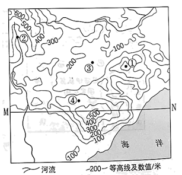
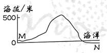
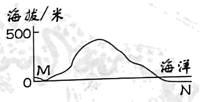
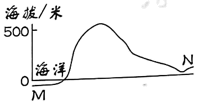
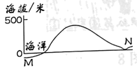
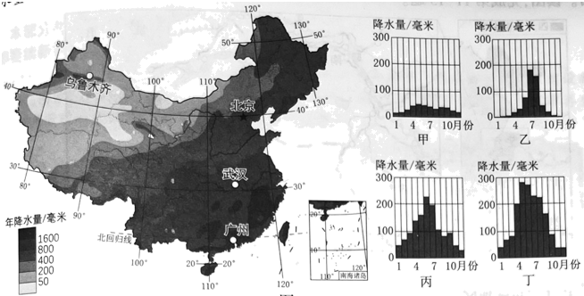

2023年北京市中考地理真题 · 选择题 第1、2、3、4、5题
传统节日是传承中华优秀传统文化的重要载体。图为我国某地四大传统节日景观及习俗简笔画。读图，完成下面小题。
1. 图中景观及习俗，与传统节日对应正确的是（ ）
A. ①——春节B. ——②端午节C. ——③清明节D. ——④中秋节
2. 图中自然景观差异的形成，主要是由于（ ）
A. 地球运动B. 地球形状C. 海陆变迁D. 海陆分布
等高线地形图是认识地表高低起伏的地理工具。图为某地等高线地形图。读图，完成下面小题。

3. 图中（ ）
A. ①地海拔为300米B. ②地地处山谷
C. 在③地可东眺大海D. ④地坡度最大
4. 沿MN绘制的地形剖面示意图是（ ）
A

B. 
C.

D. 
分析降水量分布状况是认识区域差异的重要内容。图为中国年降水量分布和国地降水量柱状图。读图，完成下面小题。

5. 我国年降水量（ ）
A. 随纬度升高而逐渐增加B. 沿北纬40°线自东向西递增
C 沿东经120°线自北向南递减D. 自东南沿海向西北内陆递减